fn_4Dview
Navigation inside 3D, 4D or 5D imaging data.
This function is quite powerful; unfortunately however some bugs need to be fixed.
Contents
Syntax
fn_4Dview(option1,optionArgs1,...)
varargout = fn_4Dview(action,actionArgs)
fn_4Dview('demo')Description
Type fn_4Dview demo to execute a step-by-step demo (the output of this demo is displayed below).
The simplest input to fn_4Dview is fn_4Dview('data',data), where data is a 3D, 4D or 5D array. The default behavior will consider that dimensions are organized as x - y - z - t - c (i.e. 3 spatial dimensions, optional time dimension, and optional 'condition' dimension). And it will result in displaying 3 spatial sections (x-y, x-z and y-z) centered on x, y, z, t and c all equal to 1.
Many other displays are available: 2D (instead of 3D) display, temporal display, surfacic display, arrows display... as well as additional operations such as change of coordinates, change of clipping range, ... For this, use flags according to the instructions in the Options section below.
Input:
- option.. string - specify an option (see below)
- optionArgs.. argument of option
- action.. specific usage of fn_4Dview, does not create a new
interface (see below)Options:
Data
- 'data',data array, by default, dimensions should be x - y - z - t - c
(c is used for multiple data or channels)
[the 'data' flag can be omitted]
[default: data=0 or zeros(appropriate size)]
- 'options',{options} some display types allow additional options like
'xxxplot' -> same option possibilities as the Matlab plot function,
'quiver'...
[the 'options' flag can be omitted] [default: {}]Type of display
- '3d' data is three-dimensional (dimensions are x - y - z - t - m)
and will be spatially displayed as three cross
sections, for a given time point
[default]
- '3dplot' data is three-dimensional (dimensions are x - y - z - t - m)
and will be temporally displayed as a time course, for
a given space point
- '2d' data is two-dimensional (dimensions are x - y - t - m)
and will be spatially displayed as a single image
- '2dplot' data is two-dimensional (dimensions are x - y - t - m)
and will be displayed temporally
- '0d',tidx [deprecated]
- 'quiver' data is a 2D vector field, plus possibly 2D image
(dimensions are x - y - t - [2 vector components +
image component])
this is only applicable for spatial display
- 'mesh',mesh data is one-dimensional (dimensions are i - t - m),
where i refers to the ith vertex of a 3D mesh specified
as a cell array or struct following the 'mesh' flag
{[3 x nv vertices],[3 x nt triangles]},
and will be spatially displayed as a surface
- 'meshplot',mesh data is one-dimensional (dimensions are i - t - m) as
for 'mesh', and will be displayed temporally
- 'ind',indices data is one-dimensional (dimensions are i - t - m),
indices is a 2D or 3D image which entails indices of
the first data component (see example)
this is only applicable for temporal display
- 'timeslider',tidx
creates a slider control to move in time array tidx
- 'ext',{@updatefcn,par1,par2,...}
'ext',{'command','infoname'}
fn_4Dview does not display anything, but it links the
execution of function updatefcn to other objects
handled by fn_4Dview. The function prototype should be:
updatefcn = function(info,par1,par2,...)
with info being the structure described in fn_4Dview code.
Alternatively, one can use a string command; each time
before the command is executed, info is stored in the
base workspace with the name 'infoname', so that the
command can access to the informations it encloses.
Attention, the information concerning these updates
needs to be stored in a graphical object; if none is
specified (using 'in'), one is automatically created,
but one should delete it later on using 'fn_4Dview
unregister' (see below)Behavior
- 'active' allows callbacks (e.g. selecting point with mouse) [default]
- 'passive' disallows callbacks
- 'key',k use this to have independent links between windows
[default: all windows are linked using same key k=1]Data operations
- 'mat',M defines a spatial linear transformation between
data and world coordinates [default = eye(4)] (pixel
indices start at 1)
can be a 4x4 or 3x4 matrix (rotation+translation) or
3x3 matrix (rotation only) or 3x1 vector (translation
only) or 1x3,1x2,1x1 vector (special: scaling, first
pixel at [0 0 0])
- 'tidx',[t0 dt] time of first frame and interval between successive
frames [default: t0-=1, dt=1]
- 'tidx',tidx alternatively, one can define every sampling points
time coordinates (tidx should not have 2 elements);
it is necessary that they are equally spaced then
- 'heeginv',H provides a matrix to multiply data with before using it
this is only applicable for spatial mesh display
- 'applyfun',fun function handler or {function handler, additional arguments, ...}
data will be transformed according to fun before every
display - NOT IMPLEMENTED YETDisplay
- 'in',handle forces display in figure, axes or uicontrol specified by handle
[the 'in' flag can be ommited]
[default: in active figure or axes]
- 'channel',f if data has a 'multiple data' component (dimension m is
non-singleton), specifies which one to use for spatial
display [default: f=1]
- 'clip',[m M] specify a clipping for image display
- 'xyzperm',[a b c] defines a permutation of the dimensions before
visualizing the 3 cross-sections of the data
- 'zfact',r ratio between z and xy resolutions for 3D display
- 'labels',{xlabel,ylabel,zlabel} axis labels (ylabel and zlabel can be omitted)Actions
- 'demo' run the demo
- 'changexyz',key,xyz update space coordinates for objects linked by the key
- 'changet',key,t update time coordinate for objects linked by the key
- 'unregister'[,@updatefcn][,key]
unregister external functions which were
previously registered (type 'ext') by deleting
the associated objects;
this unregistration can be filtered by which
function handles and/or which linking keyHow to use the mouse to select points and draw selections
- point with left button -> change cursor - area with left button -> zoom to region - double-click with left button -> zoom reset (or point with middle button outside of axis) - point/area with middle button -> add point/area to current selection - double-click with middle button -> cancel current selection (or point with middle button outside of axis) - point/area with right button -> add new selection - double-click with right button -> cancel all selections (or point with right button outside of axis)
Demo
Type fn_4Dview demo or click here to have the following demo be executed step-by-step. After each step that creates a new display, try pointing, dragging, right-clicking, etc. with the mouse to explore all the possible behaviors.
Let's create a 3D volume:
[x y z v] = flow;
v is the data, x,y,z are the spatial coordinates of this data.
Each of v,x,y,z is a 3D 25x50x25 array.
Let's explore this data! Try clicking and dragging in the graphs, and clicking on the buttons.
close all
fn_4Dview(v)
Now let's create data with a temporal dimension:
vevol = zeros(25,50,25,11); for i=1:11 [xx yy zz w] = flow(25+2*(i-1)); vevol(:,:,:,i)=w(i:end-(i-1),1+2*(i-1):end-2*(i-1),i:end-(i-1)); end
vevol is a 4D 25x50x25x11 array.
Let's explore it...
% spatial visualization fn_4Dview('in',2,vevol) disp('fn_4Dview(''in'',2,vevol)')
fn_4Dview('in',2,vevol)
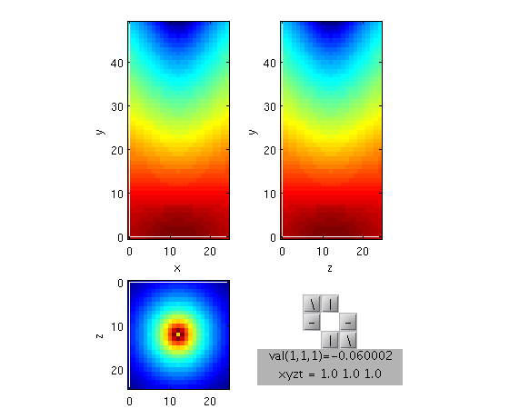 % temporal visualization fn_4Dview('in',3,vevol,'3dplot')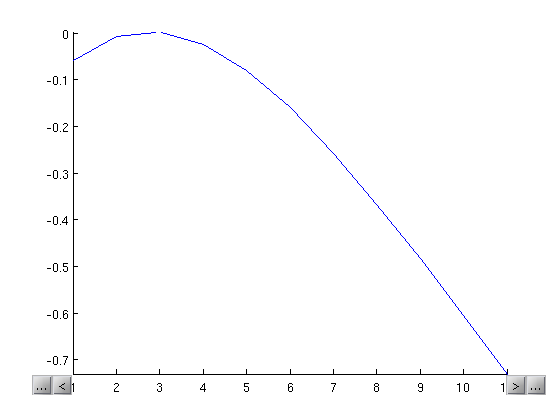
A single array can even contain several data of the same dimensions, by adding a fifth dimension:
vevol(:,:,:,:,2) = vevol + rand(size(vevol));
Now, vevol is a 5D 25x50x25x11x2 array. Let's explore it.
% spatial visualization, first data component fn_4Dview('in',2,vevol,'channel',1)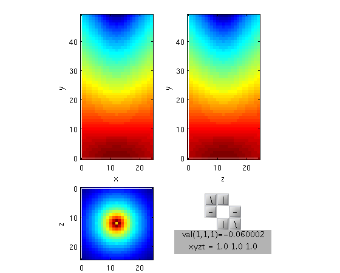
% spatial visualization, second data component fn_4Dview('in',3,vevol,'channel',2)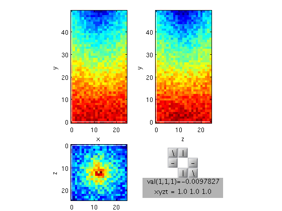
% temporal visualization, both components together fn_4Dview('in',4,vevol,'3dplot')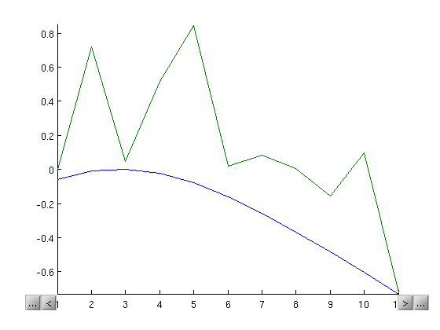
The next examples are given with less explanation...
close all s = isosurface(x, y, z, v, -3); % s is a mesh, 3104 vertices, 6020 triangles sv = interp3(x,y,z,v,s.vertices(:,1),s.vertices(:,2),s.vertices(:,3)); sv2 = sv + rand(size(sv)); nv = length(s.vertices); svevol = zeros(nv,11,1); % svevol dimensions are vertices-t-m for i=1:11 svevol(:,i)=(11-i)/(11-1)*sv+sin((i-1)*sv2/4); end va = squeeze(vevol(:,:,1,:,1)); % va is a slice, dimensions are y-x-t-m [vax vay] = gradient(va); figure(1) % display of a simple 2D image fn_4Dview('in',subplot(2,2,1),'2D',va(:,:,1)) % display of a 'quiver' image fn_4Dview('in',subplot(2,2,2),'quiver',vax(:,:,1),vay(:,:,1),va(:,:,1)) % (quiver + time) data displayed spatially fn_4Dview('in',subplot(2,2,3),'quiver',vax,vay,va) % (2D + time) data displayed temporally fn_4Dview('in',subplot(2,2,4),'2dplot',va)
Quiver mode is disabled in this moment Quiver mode is disabled in this moment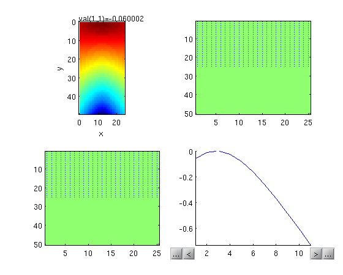
% time control fn_4Dview('in',2,'timeslider',1:11)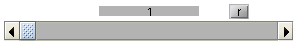
% apply a spatial transformation M = [diag([.2 .25 .25])*[0 1 0; 1 0 0; 0 0 1] [-.1; -3.25; -3.25] ; 0 0 0 1]; % spatial display of first channel fn_4Dview('key',2,'in',3,'mat',M,'channel',1,vevol)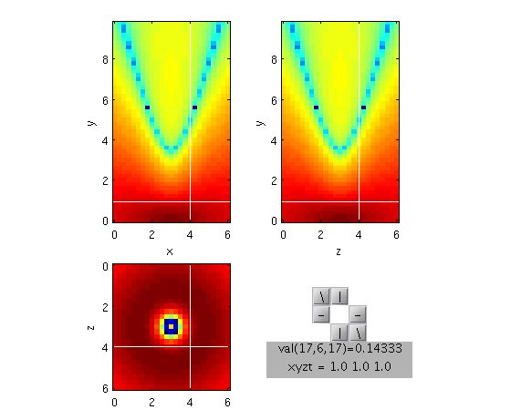
% spatial display of second channel fn_4Dview('key',2,'in',4,'mat',M,'channel',2,vevol)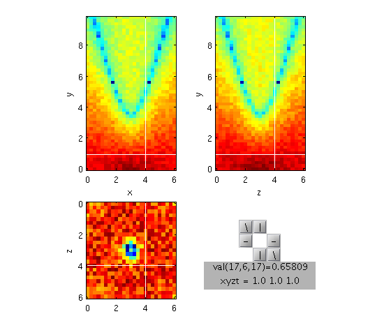
% spatial display of a (mesh+time) data fn_4Dview('key',2,'in',6,'mesh',s,svevol)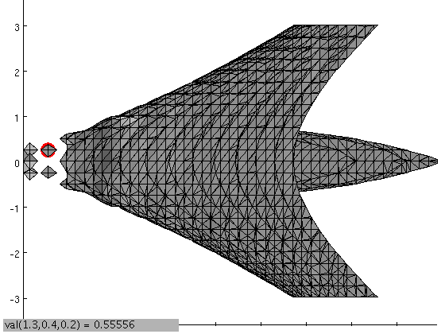
figure(5) % temporal display of (3d+time) data fn_4Dview('key',2,'in',subplot(2,1,1),'mat',M,'3dplot',vevol) % temporal display of (mesh+time) data fn_4Dview('key',2,'in',subplot(2,1,2),'mesh',s,'3dplot',svevol)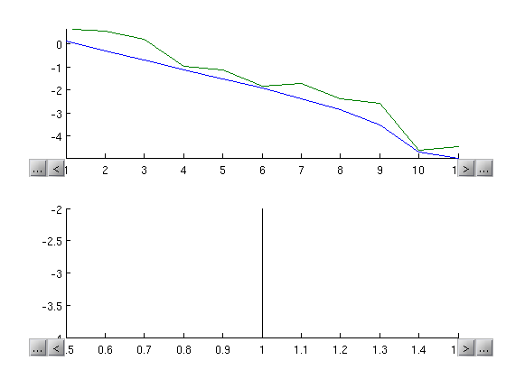
Source
Thomas Deneux
Copyright 2004-2012